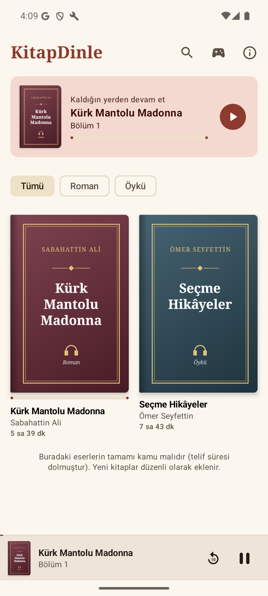
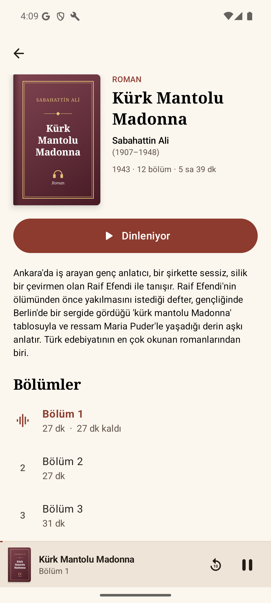
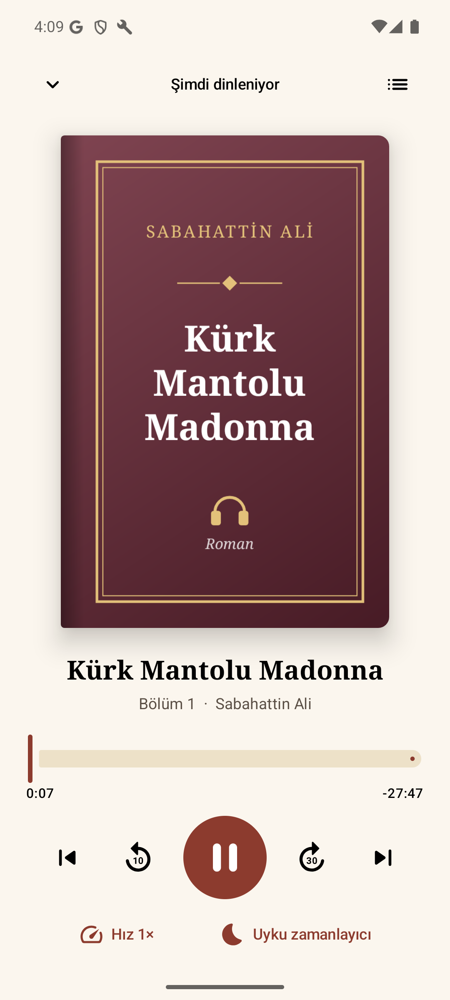
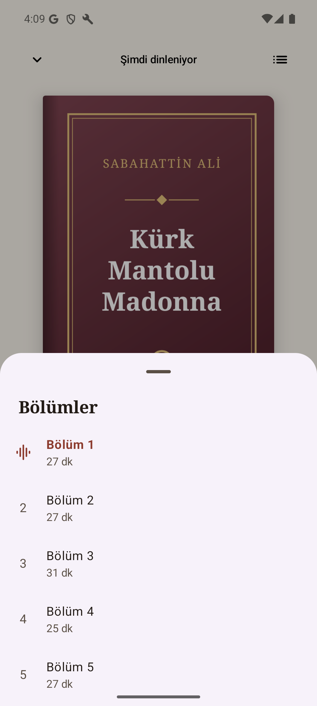

KitapDinle
Türk klasikleri · sesli ve ücretsizTurkish classics · audiobooks, free
UygulamaThe app
KitapDinle, Türk edebiyatının klasiklerini sesli kitap olarak ücretsiz dinlemenizi sağlar. Yolda, işte ya da uyumadan önce kulaklığınızı takın; kitabınız kaldığı yerden devam etsin.KitapDinle lets you listen to classics of Turkish literature as free audiobooks. Put on your headphones on the road, at work or before bed, and pick up right where you left off.
- Sabahattin Ali'nin Kürk Mantolu Madonna'sı ve Ömer Seyfettin'in Kaşağı, Pembe İncili Kaftan, Forsa gibi 33 hikâyesi; her ay yeni kitaplarSabahattin Ali's Madonna in a Fur Coat and 33 stories by Ömer Seyfettin; new books every month
- Tüm eserler kamu malıdır (telif süresi dolmuştur)All works are in the public domain
- Kaldığınız yeri otomatik hatırlar; "Devam et" ile tek dokunuşta sürdürünRemembers where you stopped; resume with a single tap
- Ekran kapalıyken çalmaya devam eder; kilit ekranı, kulaklık ve Bluetooth denetimleriKeeps playing with the screen off; lock screen, headset and Bluetooth controls
- 0,75× ile 2× arası dinleme hızı, 10 sn geri / 30 sn ileriPlayback speed from 0.75× to 2×, 10 s back / 30 s forward
- Uyku zamanlayıcı: 5–60 dakika ya da bölüm bitinceSleep timer: 5–60 minutes or at the end of the chapter
Ekran görüntüleriScreenshots




Seslendirme ve verilerNarration and data
- Kitaplar yapay ses teknolojisiyle seslendirilmiştir; metinler Vikikaynak'tan alınır.Books are narrated with synthetic speech; texts come from Turkish Wikisource.
- Hesap ya da oturum açma yok; dinleme bilgileri yalnızca telefonda saklanır. Uygulama reklam içerir; dinleme sırasında geçiş reklamı çıkmaz.No account or sign-in; listening progress stays on the phone. The app contains ads; no full-screen ad appears while you listen.